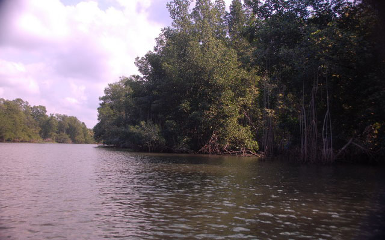
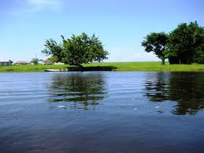
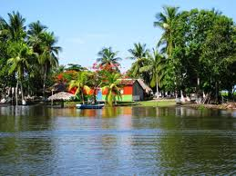
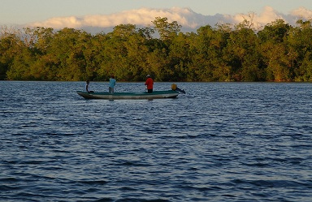
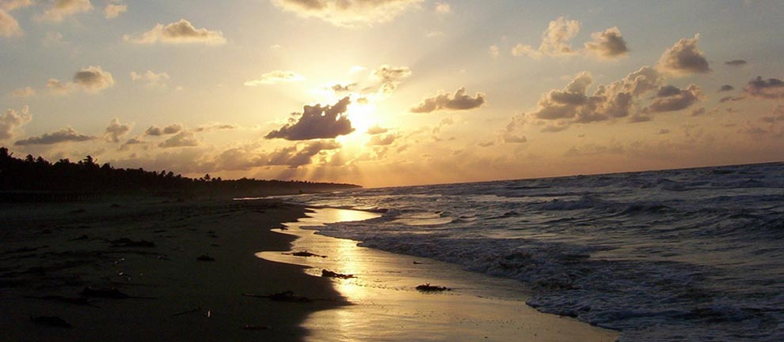

Donde convergen los brazos del río, formando un estero de aguas dulces y tranquilas donde normalmente hay pescadores que pescan lisas, pargos y otras especies.
Cuenta con canales conformados por los manglares, en los que habitan cientos de aves migratorias de diferentes especies y tiene una franja de arena muy fina de color gris donde rompen las olas del mar.
Se localiza a 95 Kilómetros de la Ciudad de Tonalá
Partiendo de Tonala
Usted tomara la carretera Tonalá-Pijijiapan (carretera 200) – llegando a Pijijiapan al crucero encontrara un desvío que conduce a Chocohuital (a mano derecha) siga en esa dirección hasta topar con Chocohuital.
Podrá realizar actividades como:
• Nado en el estero.
• Paseos en lancha.
• Senderismo
• Observación de flora y fauna.





posicione el mouse sobre las imágenes